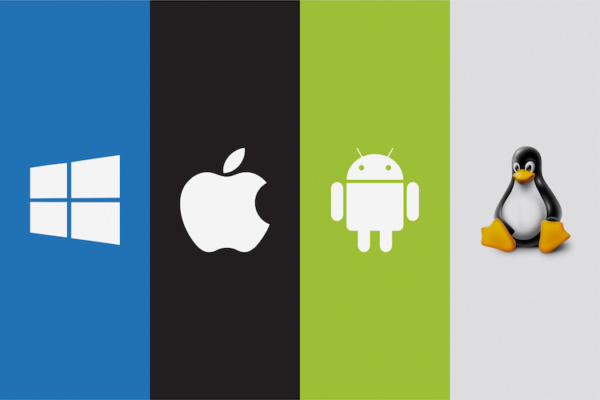

Exemplos
Fundamentalmente, um sistema operacional é um software, que pode ser o Linux, Windows, Android, macOS, UNIX, entre outros. No entanto, ele não resume aquilo que seus olhos conseguem ver ou ao que você consegue interagir.

Fundamentalmente, um sistema operacional é um software, que pode ser o Linux, Windows, Android, macOS, UNIX, entre outros. No entanto, ele não resume aquilo que seus olhos conseguem ver ou ao que você consegue interagir.